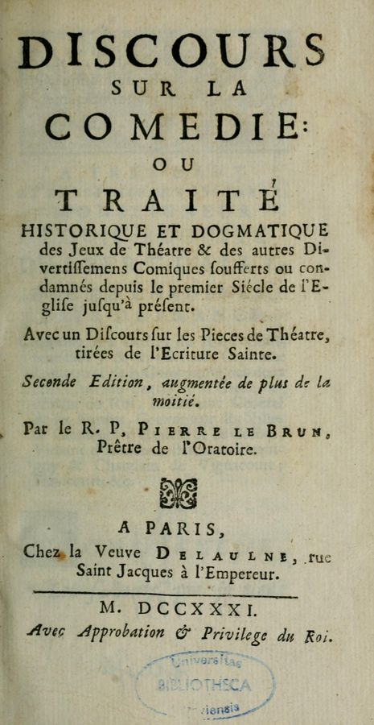

Molière and Rosimond (p. 259)

French: p. 259, scan. Long s modernised. Highlighted: Lecky’s words.
Molière was then going on the stage, and it is well known that he did not work to purify it. … What is certain is that his death is a terrible moral for all his fellows, and for all who seek only to laugh. A little earth obtained by prayer is all he had of the Church, and even so it was necessary to protest that he had given signs of repentance. Rosimond, dying suddenly in 1691, was buried without clergy, without light and without any prayer, in a place in the cemetery of St. Sulpice where they put children dead without baptism. Add to this the strictness of the parish priests of Paris, who give the sacraments to sick actors only after a public declaration that they will go on the stage no more. …
Original French
Molière montoit alors sur le Théâtre, & on sçait bien qu’il n’a pas travaillé à le purifier. … Ce qui est constant, c’est que sa mort est une Morale terrible pour tous ses Confrères, & pour tous ceux qui ne cherchent qu’à rire. Un peu de terre obtenuë par priere, c’est tout ce qu’il eut de l’Eglise, encore falut-il bien protester qu’il avoit donné des marques de repentir. Rosimond étant mort subitement en 1691. fut enterré sans Clergé, sans luminaire & sans aucune priere dans un endroit du Cimetiere de S. Sulpice, où l’on met les enfans morts sans Batême. Ajoûtez à cela l’exactitude de Messieurs les Curez de Paris, qui ne donnent les Sacremens aux Comediens malades qu’après une déclaration publique, qu’ils ne monteront plus sur le Théâtre. …
| Lecky, 1865 | Le Brun, 1731 | |
|---|---|---|
| Fellows | tous ses confrères | tous ses Confrères |
| Earth | un peu de terre obtenu par prière | Un peu de terre obtenuë par priere (italic) |
| Church | c’est tout ce qu’il a de l’Église, et encore fallut-il bien protester | c’est tout ce qu’il eut de l’Eglise, encore falut-il bien protester |
| Clergy | sans clergé, sans lumière, et sans aucune prière | sans Clergé, sans luminaire & sans aucune priere |
Lecky’s “il a” for Le Brun’s past tense “il eut”, and “lumière” for “luminaire” (candles), are small slips or changes; the sense is the same. The dash and the added “et” are Lecky’s. He says Le Brun “relates this with much exultation”; I read only this page and cannot judge the tone of the whole book, though nothing on this page is plainly exultant.
Editor’s notes on this page
Lecky quotes Le Brun’s remark that Molière’s death is a “terrible moral” for all actors, that only “a little earth obtained by prayer” was granted him, and that the actor Rosimond, dying suddenly in 1691, was buried without clergy, light or prayer in the part of the St. Sulpice cemetery where unbaptised children lay. The quotation is faithful. Lecky’s “et encore fallut-il bien protester” corresponds to Le Brun’s “encore falut-il bien protester”, and he leaves out the sentence after it.
Further down the rabbit hole
Sources that Lecky cites in the notes next to the ones that cite this page.
- Concina, Adversus usuram and De spectaculisA Dominican against interest and against the stage: the pope’s own polemicist
- Desprez de Boissy, Lettres sur les spectaclesA lawyer’s book burnt by the executioner for defending actors, 1761
- Bossuet, Maximes et réflexions sur la comédieWhy the Church refused actors communion and Christian burial
- Hogarth, Memoirs of the OperaLulli’s absolution and Politian’s Orfeo checked against Hogarth
- Buckle, History of Civilization in EnglandWeather and credulity, and the Scottish clergy’s Devil who had been studying for five thousand years
- Lamet and Fromageau, Dictionnaire des cas de conscienceThe Sorbonne answers: three per cent is usury, and every actor is in mortal sin


Backlinks
Every place in Rationalism in Europe that links to this page (generated automatically when the site is built).